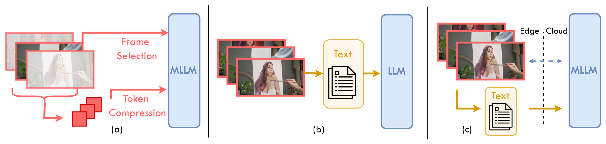
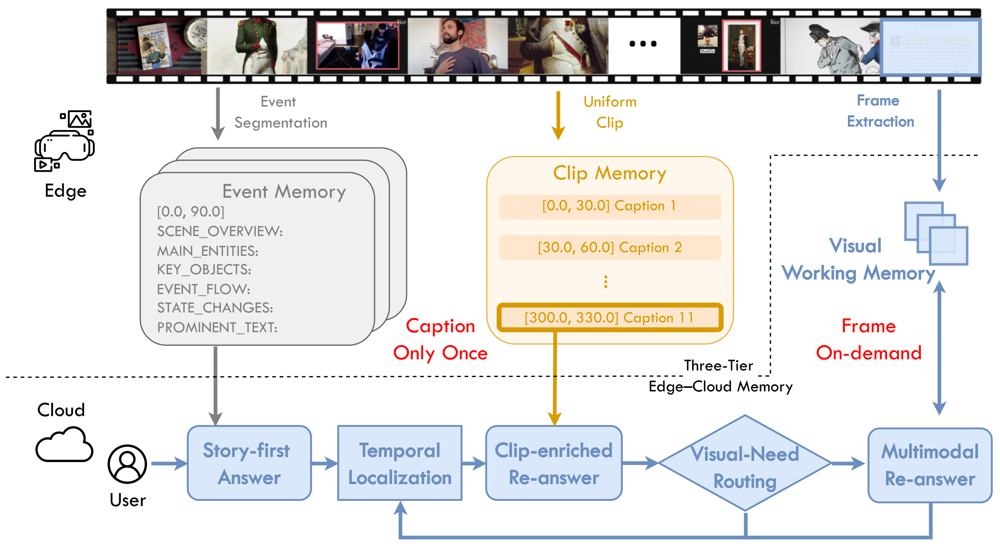
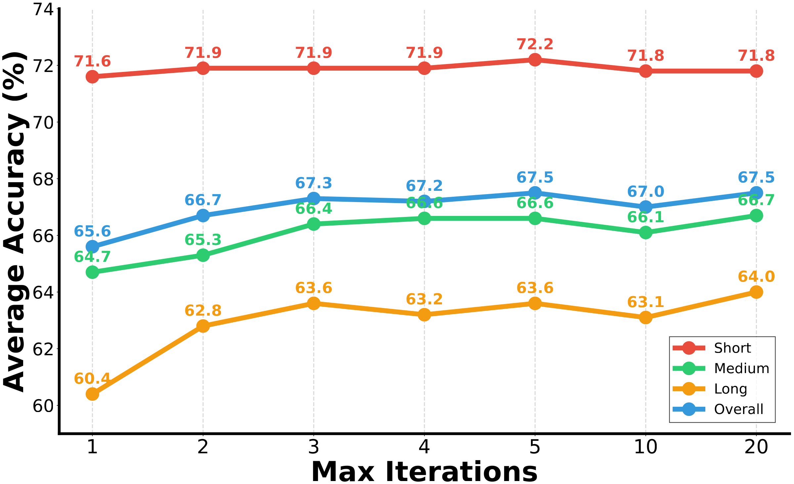
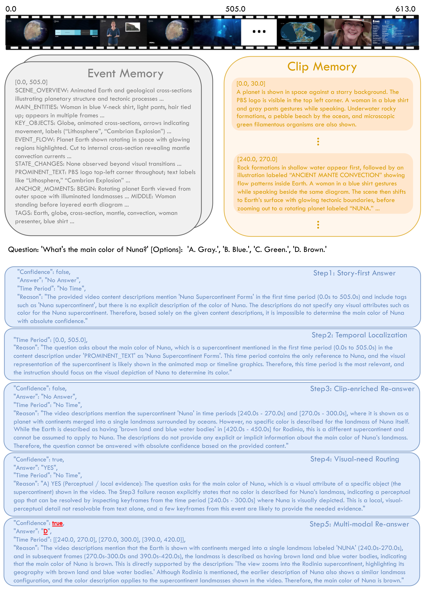
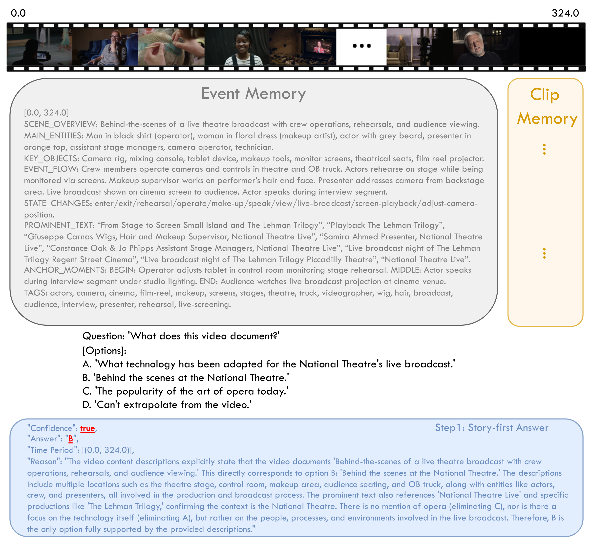

Dual-track narrative index
One question-agnostic captioning pass builds an event-level story skeleton and a clip-level micro-log, cached and reused across queries without re-captioning.
CFD captions a long video once on the edge, then reasons in the cloud and retrieves raw frames only when the Visual-Need Router determines pixel-level evidence is necessary. On Video-MME, it achieves 67.5 overall with only 5.8 frames per question on average.

Long-video understanding on edge devices must reason over hours of content under tight compute and bandwidth budgets. Subsampling visual tokens loses temporal structure, while text-only video memories lose fine-grained visual attributes. We observe a visual-textual duality: language memories carry long-range temporal structure better than dense frames, while pixels remain decisive for attribute-level perception. Building on this insight, we propose Caption-once, Frames-on-Demand (CFD), a budget-aware edge-cloud agentic framework. The edge runs a single offline captioning pass that builds a dual-track narrative index, an event-level story skeleton plus a clip-level micro-log, cached and reused across queries without re-captioning. At query time, a cloud-side MLLM reasons over the index in a story-first loop centered on a lightweight Visual-Need Router: a per-query gating module that triggers bounded keyframe retrieval only for perceptual questions (appearance, on-screen text, attribute disambiguation) and keeps temporal-structural questions in language space. The router turns visual access into a first-class, query-conditioned cost, capping per-query frame consumption regardless of video length. Experiments on long-video benchmarks demonstrate strong accuracy-efficiency trade-offs while substantially reducing online visual processing.
Language memories carry long-range temporal structure better than dense frames, while pixels remain decisive for attribute-level perception.
| Input | Overall (%) |
|---|---|
| Image | 92.32 |
| Caption | 77.17 |
| Pipeline | Chronological Understanding | Global Appearance | Scene Transitions | Character Actions |
|---|---|---|---|---|
| Video | 48.44 | 70.54 | 53.97 | 67.04 |
| 60s / Caption | 56.46 | 53.49 | 58.73 | 53.07 |
CFD separates offline narrative indexing on the edge from on-demand visual verification on the cloud.
One question-agnostic captioning pass builds an event-level story skeleton and a clip-level micro-log, cached and reused across queries without re-captioning.
The agent first attempts a story-first answer from the event memory; if confidence is insufficient, it localizes a relevant unexplored event and enriches it with overlapping clip captions.
A per-query gating module that triggers bounded keyframe retrieval for perceptual questions and keeps temporal-structural questions in language space.

Up to T = 5 iterations; if none yields a confident answer, a must-answer fallback commits to the best answer using all accumulated evidence.
CFD achieves 67.5 overall with only 5.8 frames per question on average, matching or exceeding all reported agent-based baselines; with Qwen3.5 (9B + 27B) as captioner and reasoner it reaches 69.4 with only 2.5 frames. We do not aim to match dense-inference upper bounds such as Qwen3-VL-32B at 768 frames; we target the accuracy-efficiency frontier under bounded visual budgets.
| Method | #Captions | Re-caption? | #Frames | Video-MME | |||
|---|---|---|---|---|---|---|---|
| short | medium | long | overall | ||||
| Leading Open-source MLLMs | |||||||
| VideoChat2-7B | – | – | 16 | 48.3 | 37.0 | 33.2 | 39.5 |
| LongVA-7B | – | – | 128 | 61.1 | 50.4 | 46.2 | 52.6 |
| Kangaroo-7B | – | – | 64 | 66.1 | 55.3 | 46.6 | 56.0 |
| Video-CCAM-14B | – | – | 96 | 62.2 | 50.6 | 46.7 | 53.2 |
| VideoXL-7B | – | – | 128 | 64.0 | 53.2 | 49.2 | 55.5 |
| Dispider-7B | – | – | 1 fps | – | – | – | 57.2 |
| VideoChat-Online-4B | – | – | 2 fps | – | – | 47.1 | 54.4 |
| TimeChat-Online-7B | – | – | 1 fps | – | – | 48.4 | 62.4 |
| Qwen3-VL-32B | 768 | 82.4 | 76.3 | 69.0 | 75.9 | ||
| Agent-based Systems | |||||||
| VideoAgent | 2 s | ✓ | – | – | – | 46.4 | – |
| VideoTree | 8 s | ✓ | – | 67.8 | 59.9 | 54.2 | 60.6 |
| DrVideo | 5 s | ✓ | – | – | – | 51.7 | – |
| MemVid | – | ✗ | 1 fps | 73.9 | 63.1 | 55.0 | 64.0 |
| VideoLucy† | < 30 s | ✓ | – | 73.2 | 64.7 | 56.2 | 64.7 |
| CFD (Qwen3-VL-8B + Qwen3-VL-32B) | 233.1 s | ✗ | 5.8 | 72.2 | 66.6 | 63.6 | 67.5 |
| CFD (InternVL3.5-8B + InternVL3.5-38B) | 233.1 s | ✗ | 7.6 | 69.0 | 63.1 | 60.7 | 64.3 |
| CFD (Qwen3.5-9B + Qwen3.5-27B) | 233.1 s | ✗ | 2.5 | 73.7 | 70.4 | 64.1 | 69.4 |
CFD achieves the best Chronological Understanding score (55.10) at only 14.8 frames per question on average, exceeding the 768-frame dense baselines, and remains competitive on Scene Transitions; it stays below the dense Qwen3-VL on Global Appearance and Character Actions.
| Method | #Captions | #Frames | Chronological Understanding | Global Appearance | Scene Transitions | Character Actions |
|---|---|---|---|---|---|---|
| LLaVA-OneVision | – | 128 | 43.91 | 37.21 | 25.40 | 20.11 |
| InternVL2.5 | – | 128 | 42.16 | 34.88 | 20.63 | 21.60 |
| Qwen2-VL | – | 768 | 48.41 | 31.01 | 23.81 | 32.59 |
| Qwen2.5-VL | – | 768 | 27.17 | 37.98 | 22.22 | 22.53 |
| InternVL3 | – | 128 | 36.29 | 33.33 | 28.57 | 23.46 |
| Qwen3-VL | – | 768 | 48.44 | 70.54 | 53.97 | 67.04 |
| CFD (Ours) | 206 s | 14.8 | 55.10 | 58.90 | 52.40 | 56.20 |
CFD achieves 52.9 overall, outperforming all agent-based systems that use open-source models and remaining competitive with the leading open-source MLLM AdaReTaKe-72B (53.3).
| Method | ER | EU | KIR | TG | Rea | Sum | Overall |
|---|---|---|---|---|---|---|---|
| Leading Open-source MLLMs | |||||||
| TimeMarker-8B | 42.8 | 39.1 | 34.9 | 38.7 | 38.2 | 48.8 | 41.3 |
| VideoLLaMA3-7B | 45.8 | 42.4 | 47.8 | 35.9 | 45.8 | 36.2 | 45.3 |
| InternVL2.5-78B | 43.8 | 42.0 | 42.1 | 36.8 | 51.0 | 37.9 | 43.6 |
| Qwen2-VL-72B | 38.0 | 41.1 | 38.3 | 41.4 | 46.5 | 46.6 | 41.3 |
| ReTake-7B | 49.8 | 46.2 | 52.9 | 45.0 | 45.8 | 27.6 | 47.8 |
| VideoChat-Flash-7B | 51.1 | 46.0 | 49.0 | 38.9 | 48.5 | 34.5 | 48.2 |
| AdaReTaKe-72B | 53.0 | 50.7 | 62.2 | 45.5 | 54.7 | 37.9 | 53.3 |
| InternVL3-8B | 47.7 | 43.0 | 42.6 | 42.3 | 46.8 | 25.9 | 44.5 |
| Agent-based Systems | |||||||
| VideoAgent | 28.0 | 30.3 | 28.0 | 29.3 | 28.0 | 36.4 | 29.3 |
| VideoTree | 30.3 | 25.1 | 26.5 | 27.7 | 31.9 | 25.5 | 28.8 |
| MemVid | 53.4 | 40.6 | 46.3 | 34.9 | 43.2 | 28.1 | 44.4 |
| VCA | 43.7 | 40.7 | 37.8 | 38.0 | 46.2 | 27.3 | 41.3 |
| VideoLucy† | 54.3 | 59.8 | 75.6 | 51.7 | 55.9 | 49.1 | 58.8 |
| CFD (Ours) | 53.9 | 50.2 | 63.9 | 48.2 | 48.3 | 37.9 | 52.9 |
Text alone cannot substitute for visual evidence (Global Appearance 9.30 with event memory alone, 38.00 with all clip captions). Always-on frames bring sharp gains on appearance-centric tasks at the cost of Chronological Understanding (51.70) and long-video accuracy (62.6); the Visual-Need Router recovers them to 55.10 and 63.6, a more balanced accuracy-efficiency trade-off.
| Event | Clip | Reasoning Loop | Frames | Router | Video-MME | InfiniBench | ||||||
|---|---|---|---|---|---|---|---|---|---|---|---|---|
| short | medium | long | overall | Chronological Understanding | Global Appearance | Scene Transitions | Character Actions | |||||
| ✓ | 62.0 | 53.7 | 56.3 | 57.3 | 52.30 | 9.30 | 39.70 | 16.90 | ||||
| ✓* | 68.2 | 66.4 | 62.0 | 65.5 | 55.70 | 38.00 | 65.10 | 43.90 | ||||
| ✓ | ✓ | ✓ | 68.8 | 64.0 | 63.0 | 65.3 | 55.10 | 45.00 | 52.40 | 53.40 | ||
| ✓ | ✓ | ✓ | ✓ | 72.3 | 66.7 | 62.6 | 67.2 | 51.70 | 62.80 | 58.70 | 65.90 | |
| ✓ | ✓ | ✓ | ✓ | ✓ | 72.2 | 66.6 | 63.6 | 67.5 | 55.10 | 58.90 | 52.40 | 56.20 |
CFD uses 66.3% fewer clip captions on average while outperforming the all-clip baseline overall.
| Method | Short | Medium | Long | Average |
|---|---|---|---|---|
| All 30-s clip captions | 3.10 | 17.69 | 82.66 | 34.49 |
| CFD-activated captions | 1.52 | 9.29 | 24.05 | 11.62 |
| Caption reduction | 51.2% | 47.5% | 70.9% | 66.3% |
Even with the Router disabled, online frame usage drops from 768 to 6.63 frames/query (99.1% fewer, about 116×); the Router further reduces it to 5.76 (−13.1%) while improving accuracy from 67.2 to 67.5. Frame savings do not imply lower wall-clock latency in every configuration, because the prompt-based Router introduces an additional LLM call. Increasing the budget from 2/4 to 8/16 improves accuracy by 0.3 points, while 32/64 yields only another 0.1 point.
| Frames per event (Nfr) | FIFO capacity (Nwm) | Frames / query | Accuracy |
|---|---|---|---|
| 2 | 4 | 1.83 | 67.2 |
| 8 | 16 | 5.76 | 67.5 |
| 32 | 64 | 8.93 | 67.6 |
The Router improves average accuracy by 2.2 points over no-frame reasoning and slightly exceeds always-frame inference (67.5 vs. 67.2) with 13.1% fewer online frames. In a paired diagnostic rerun, it retrieves frames for 46.2% of questions and captures 127 of 133 (95.5%) cases in which frames empirically improve the answer; routing accuracy is 68.5% on the 1,876 decidable questions.
| Policy | Short | Medium | Long | Average |
|---|---|---|---|---|
| No frames | 68.8 / 0.00 | 64.0 / 0.00 | 63.0 / 0.00 | 65.3 / 0.00 |
| Always frames | 72.3 / 2.54 | 66.7 / 6.57 | 62.6 / 10.78 | 67.2 / 6.63 |
| Visual-Need Router | 72.2 / 2.38 | 66.6 / 5.81 | 63.6 / 9.09 | 67.5 / 5.76 |
Long-video accuracy keeps improving from 60.4 at T = 1 to 64.0 at T = 20; we adopt T = 5, which achieves the best overall score of 67.5.

Scaling the captioner 2B→8B brings a substantial gain (62.6→67.5 overall), while 32B degrades long-video accuracy (61.0 vs. 63.6), which we attribute to verbosity accumulation; we adopt Qwen3-VL-8B.
| Caption Model | Size | short | medium | long | overall |
|---|---|---|---|---|---|
| Qwen3-VL | 2B | 67.7 | 61.9 | 58.1 | 62.6 |
| 8B | 72.2 | 66.6 | 63.6 | 67.5 | |
| 32B | 72.4 | 67.1 | 61.0 | 66.8 |
Attribute perception: “What's the main color of Nuna?”

Direct answer: “What does this video document?”

@misc{cai2026cfd,
title={Caption-once, Frames-on-Demand: Visual-Need Routing for Budget-Aware Agentic Long Video Understanding},
author={Weitong Cai and Hang Zhang and Yukai Huang and Yiqiao Xie and Shan Gao and Jiankang Deng and Songcen Xu and Jifei Song and Zhensong Zhang},
year={2026},
eprint={2609.11899},
archivePrefix={arXiv},
primaryClass={cs.CV},
url={https://arxiv.org/abs/2609.11899},
}